Pipeline DevOps — supervision de parc
Projet de recherche et développement mené pendant mon alternance au Pôle de Santé du Plateau. L'objectif de départ était simple : disposer d'un outil qui affiche en temps réel l'état des équipements réseau de la clinique. La mise en œuvre m'a conduit à construire une chaîne d'intégration continue complète — dépôt GitLab, build Docker, pipeline Jenkins — autour d'une petite application Python qui interroge une base MariaDB et teste la disponibilité de chaque équipement par ping. Le projet est resté au stade de preuve de concept, pour une raison d'exploitation que j'explique en fin de page.
Deux services orchestrés par Docker Compose
L'application repose sur deux conteneurs. Un service web
construit à partir d'une image Ubuntu 22.04 embarquant Nginx et Python 3, et un service
base de données MariaDB 10.11. La table
equipements stocke l'inventaire : nom, IP, rôle, statut, adresse MAC et méthode d'accès.
Les identifiants de connexion sont injectés par variables d'environnement plutôt qu'écrits en dur
dans le code.
Ubuntu 22.04 · Nginx · Python 3 · ports 8081 et 8082
MariaDB 10.11 · volume persistant db_data
GitLab · branche main
2 étapes : Nettoyage puis Déploiement
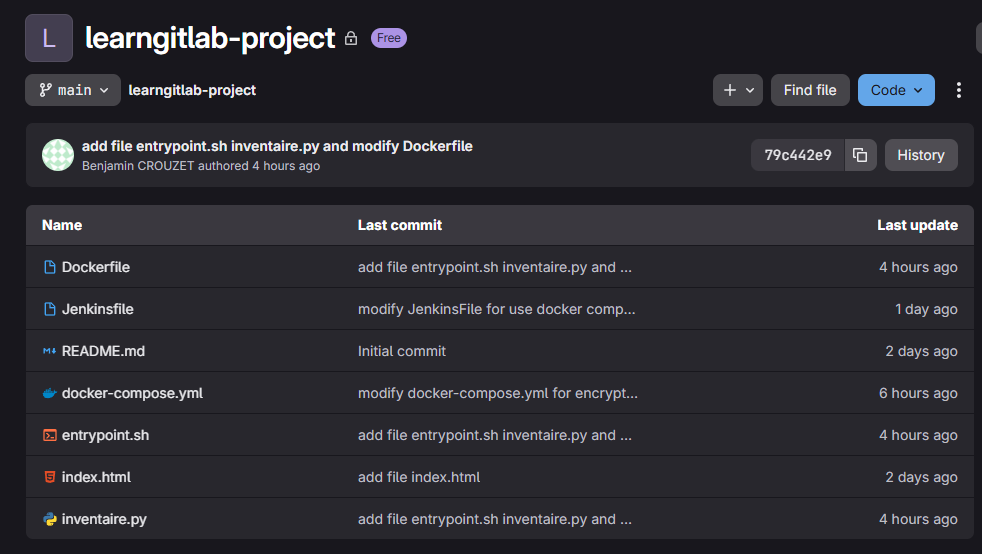
Dockerfile et docker-compose
Le Dockerfile part d'une image ubuntu:22.04, installe Nginx, Python 3,
python3-mysqldb et iputils-ping, copie les deux scripts et définit
entrypoint.sh comme point d'entrée. Le fichier de composition déclare les deux services,
la dépendance du web vers la base, les ports publiés et le volume de persistance.
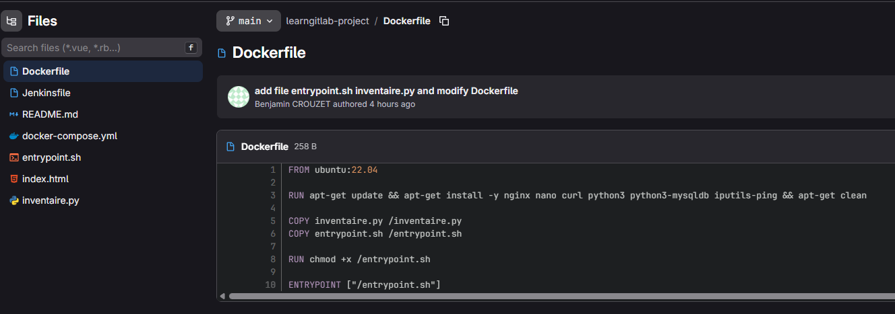
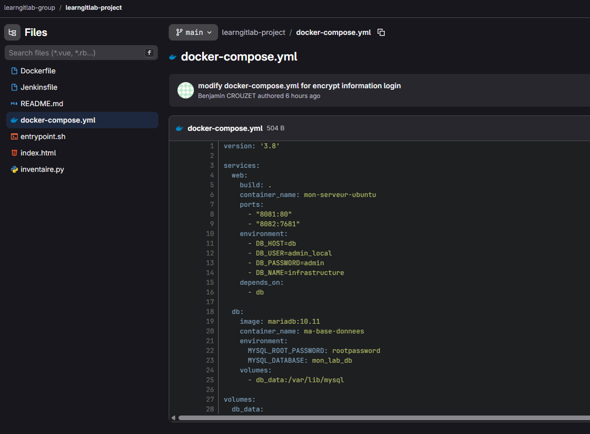
Le script entrypoint.sh résout un problème classique du
conteneur : lancer deux processus. Il démarre le script Python en arrière-plan et laisse Nginx au
premier plan, ce qui maintient le conteneur vivant.
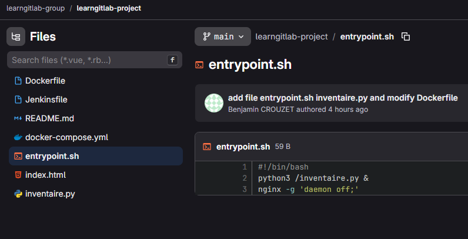
Pipeline Jenkins en deux étapes
Le Jenkinsfile décrit un pipeline volontairement court. L'étape
Nettoyage arrête et supprime les conteneurs en cours via
docker compose down. L'étape Déploiement
reconstruit les images et relance les services avec docker compose up -d --build.
À chaque push sur le dépôt, l'application est reconstruite et redéployée dans sa version la plus
récente, sans intervention manuelle.
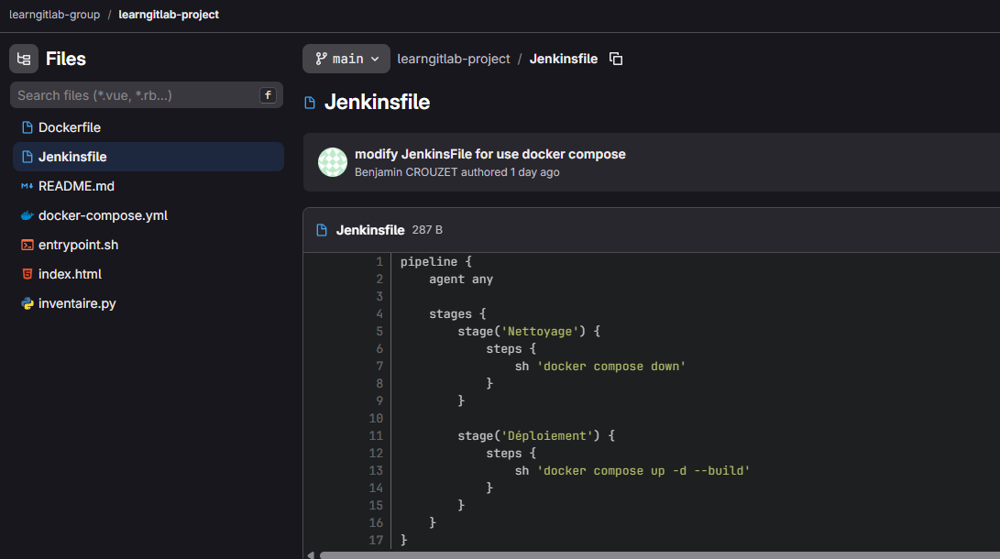
inventaire.py — la boucle de supervision
Le script se connecte à MariaDB, lit la table equipements, exécute un
ping -c 1 -W 1 sur chaque adresse et en déduit le statut. Il génère ensuite la page
/var/www/html/index.html servie par Nginx, avec un badge vert « En ligne » ou rouge
« Hors ligne » selon le code retour. La boucle se répète toutes les cinq secondes, ce qui donne un
rafraîchissement quasi temps réel sans planificateur externe.
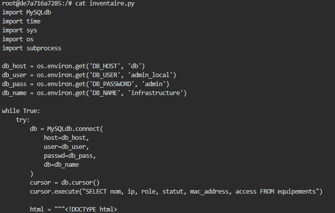
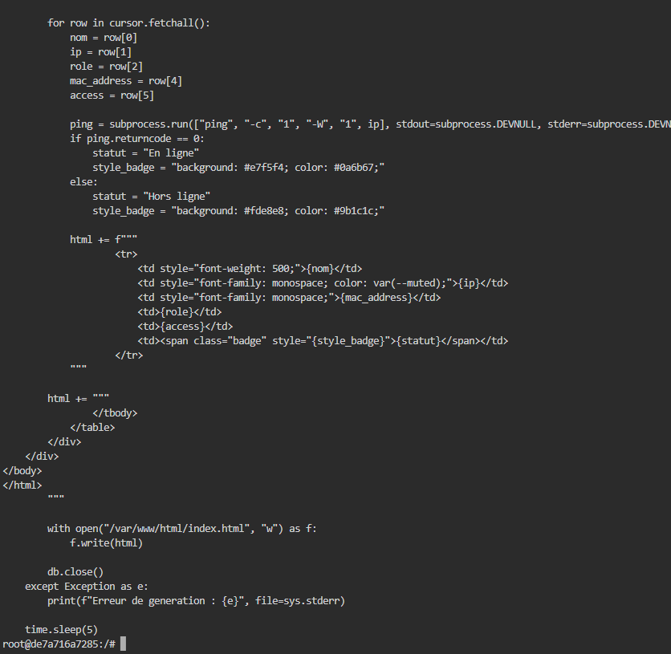
Côté données, cinq équipements représentatifs ont servi de jeu de test : le pare-feu FortiGate, un switch de cœur, les deux conteneurs Docker et le poste hôte.
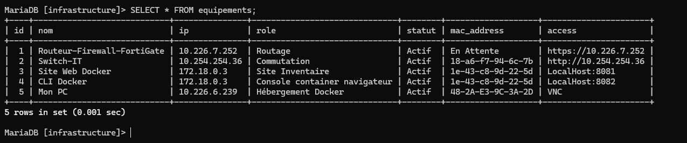
L'interface de supervision
Le rendu final est accessible sur localhost:8081. Le tableau liste chaque équipement
avec son adresse IP, son adresse MAC, son rôle, son mode d'accès et son statut calculé au moment de
l'affichage. C'est un outil de supervision léger, entièrement automatisé et extensible : ajouter un
équipement se résume à une ligne en base.
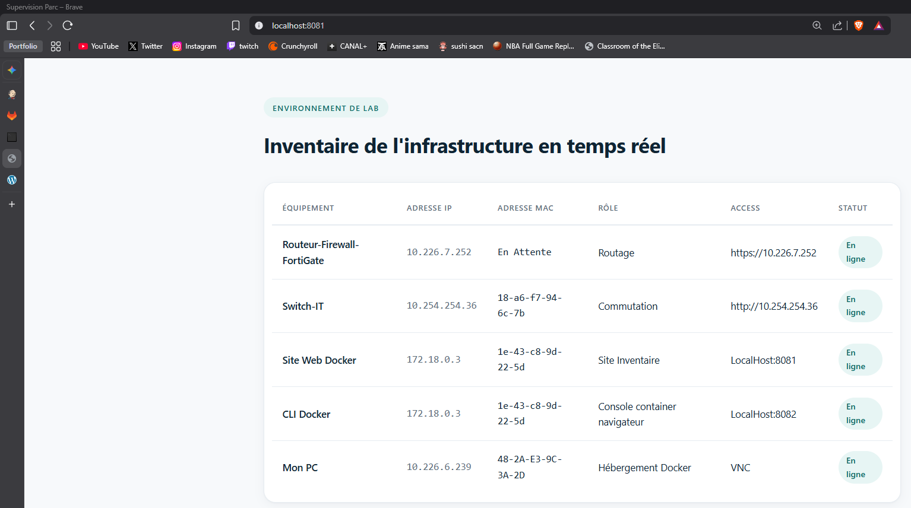
Sauvegarde planifiée
Une tâche cron exécute chaque nuit à 2 h un script sauvegarde.sh qui archive le
projet et le contenu de la base. Le service cron a été vérifié actif et ses exécutions
tracées dans le journal système.
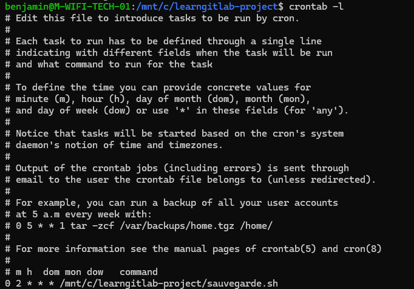
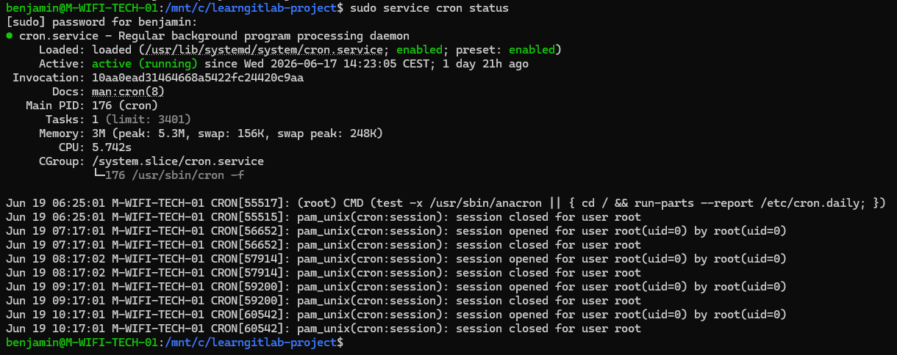
Pourquoi ce projet n'est pas passé en production
La chaîne fonctionne, mais elle n'a pas été mise en production, et c'est une décision assumée. Maintenir Docker Compose, Jenkins et GitLab au quotidien — mises à jour d'images, pannes de pipeline, supervision des conteneurs — demande un temps d'exploitation qu'une équipe informatique de trois personnes ne peut pas prélever sur la disponibilité des applications médicales.
Une solution qui fonctionne et une solution qui se maintient sont deux choses différentes. J'ai conçu la chaîne complète avant de me demander qui l'exploiterait, alors que cette question aurait dû orienter les choix techniques dès le cadrage — et m'aurait sans doute conduit vers une solution packagée de type Zabbix ou Centreon plutôt que vers un développement sur mesure. L'autre enseignement est de méthode : l'observabilité se conçoit en même temps que l'infrastructure, pas après.